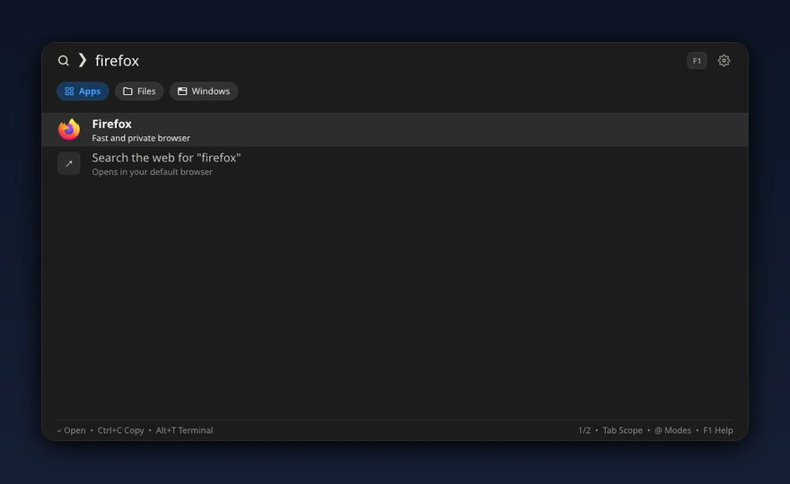
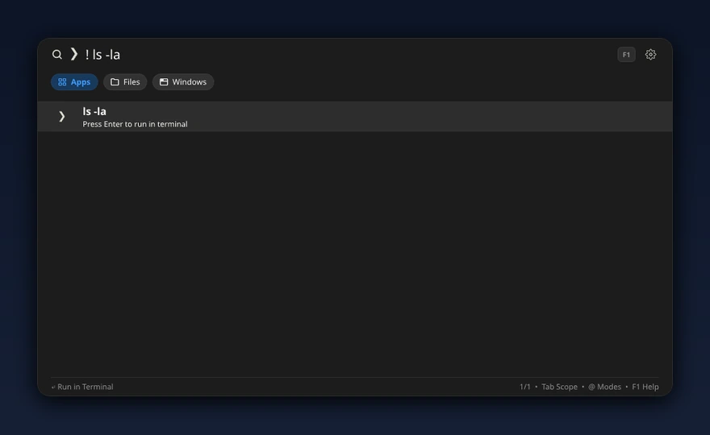
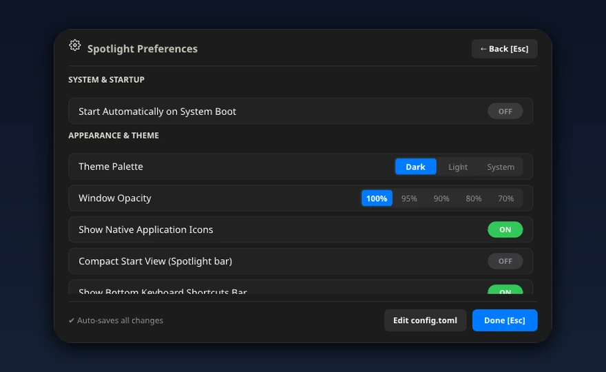

Chọn phạm vi nhanh
Nhấn Tab hoặc Shift + Tab để luân chuyển giữa Apps, Files và Windows, hoặc bấm trực tiếp vào chip.
Tìm ứng dụng, tệp tiếng Việt không dấu, xem trước nội dung, chuyển cửa sổ kèm CPU/RAM và tính toán ngay trong thanh lệnh TiaRun.


firefoxTìm ứng dụng theo tần suất sử dụng (hỗ trợ không dấu). Nhấn Enter để mở, Ctrl + C để sao chép.

@f Cargo.tomlTìm tệp tiếng Việt không dấu (vd: @f ke hoach) và xem trước mã nguồn, văn bản, ảnh hoặc thư mục. Nhấn → vào thư mục con, ← lùi lại, Alt + T mở terminal.

25 km to milesTính toán (hỗ trợ hex/nhị phân), quy đổi đơn vị và tỷ giá tiền tệ (tự cập nhật nền, dùng được offline). Nhấn Enter để sao chép kết quả.

@wXem cửa sổ đang mở kèm mức dùng CPU% và RAM, nhấn Enter để chuyển tới hoặc Alt + K để tắt tiến trình. Hỗ trợ Windows, Hyprland, Sway, KDE Wayland (kdotool), GNOME Wayland (Window Calls) và X11.

@cTự động lưu lịch sử clipboard trên Windows, Wayland và X11. Tìm lại rồi nhấn Enter hoặc Ctrl + C để sao chép lại.

! ls -laChạy nhanh bất kỳ lệnh shell nào trong terminal mặc định; nhấn ↑ ↓ để gọi lại các lệnh đã chạy trước đó.

@Duyệt nhanh toàn bộ chế độ tích hợp và chạy script plugin tùy biến kiểu Rofi đặt trong thư mục cấu hình plugins/.

@sysKhóa màn hình, tạm nghỉ, khởi động lại, tắt máy hoặc đăng xuất (hoặc gõ thẳng lock, sleep, restart).

Ctrl + ,Đổi Sáng/Tối/Hệ thống, độ trong suốt (70%–100%), chế độ thu gọn, thanh phím tắt đáy cửa sổ, tự khởi động hoặc sửa config.toml; gõ @theme để đổi nhanh.
Mở TiaRun một lần sau khi cài đặt, rồi dùng phím tắt để bật/ẩn thanh lệnh bất cứ lúc nào. Nhấn F1 hoặc gõ ? ngay trong app để xem bảng tra cứu nhanh.
Ctrl + Alt + Space
Nhấn Tab hoặc Shift + Tab để luân chuyển giữa Apps, Files và Windows, hoặc bấm trực tiếp vào chip.
Gõ tên app, phép tính, đường dẫn (~/..., C:\...) hoặc thêm tiền tố @, !, ? để vào chế độ chuyên biệt.
Dùng ↑ ↓ chọn, Enter thực hiện, Ctrl + C sao chép thông minh, Alt + T mở terminal, Esc đóng.
firefox@f ke hoach · ~/...500 * 12 · 25 km to mi0xFF), đổi đơn vị và tỷ giá tiền tệ@w@c@sys@theme@theme 90)@plugins/! ls -la? hoặc F1!@wTrên GNOME, KDE hoặc X11, gán Ctrl + Alt + Space cho lệnh tiarun trong phần phím tắt hệ thống. Trên Sway hoặc Hyprland, TiaRun hỗ trợ cấu hình tự động hoặc thêm exec tiarun --daemon để mở tức thì.
Nhấn Ctrl + , rồi chọn Edit config.toml để chỉnh thư mục index, độ sâu hoặc công cụ tìm web (web_search_url). Đặt script vào ~/.config/tiarun/plugins/ (Linux) hoặc %APPDATA%\tiarun\plugins\ (Windows), xuất từng dòng dạng Title | Subtitle | Icon | Exec (hoặc 1 dòng để copy) và gọi bằng @tên_script — xem template mẫu trên GitHub.
Chọn bộ cài, kho gói hoặc bản giải nén cho máy tính x86-64.
Cài đặt tự động, tạo shortcut Start Menu và phím tắt Ctrl+Alt+Space.
Giải nén rồi chạy trực tiếp tiarun.exe, không cần quyền cài đặt.
Mở tệp .deb hoặc chạy sudo apt install ./tiarun_*.deb để tự kèm thư viện cần thiết.
install.sh)Giải nén rồi chạy ./install.sh để tự cài binary, icon và gói runtime (apt/pacman/dnf/zypper).
Cài từ AUR kèm sẵn phụ thuộc Wayland/X11: yay -S tiarun-git
TiaRun tìm ứng dụng và tệp trên máy. Khi bạn chọn kết quả tìm trên web, truy vấn sẽ mở trong trình duyệt. Tính năng đổi tiền tệ có thể kết nối mạng để cập nhật tỷ giá nền và dùng dữ liệu lưu đệm khi offline.
Gán Ctrl + Alt + Space cho lệnh tiarun trong cài đặt phím tắt của môi trường desktop. Với @w, tính năng chạy sẵn trên Windows, Sway, Hyprland và mọi X11/XWayland; KDE Wayland cần kdotool, GNOME Wayland cần extension Window Calls, còn clipboard Wayland khuyến nghị cài wl-clipboard (tự cài khi dùng install.sh hoặc .deb).
TiaRun tạo cửa sổ một lần rồi giữ tiến trình chạy nền. Lần gọi tiếp theo gửi tín hiệu qua socket đến tiến trình đó để hiện hoặc ẩn cửa sổ tức thì.
Dùng Ctrl + , để mở cài đặt. Bạn cũng có thể đặt thư mục, độ sâu, công cụ tìm web và danh sách loại trừ trong tệp cấu hình TOML.
Đặt script vào ~/.config/tiarun/plugins/ (Linux, nhớ chmod +x) hoặc %APPDATA%\tiarun\plugins\ (Windows, hỗ trợ .ps1, .bat, .cmd, .py, .exe), rồi gõ @tên_file trong TiaRun. Mỗi dòng in ra stdout theo chuẩn Title (bấm Enter để copy) hoặc Title | Subtitle | Icon | Exec (để chạy lệnh/mở URL). Xem hướng dẫn và template mẫu.